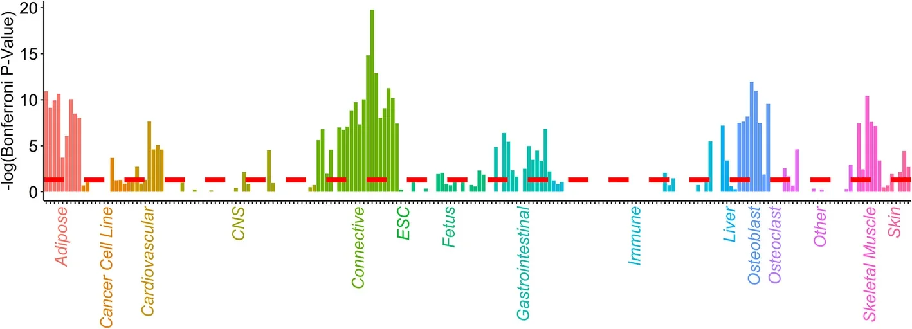
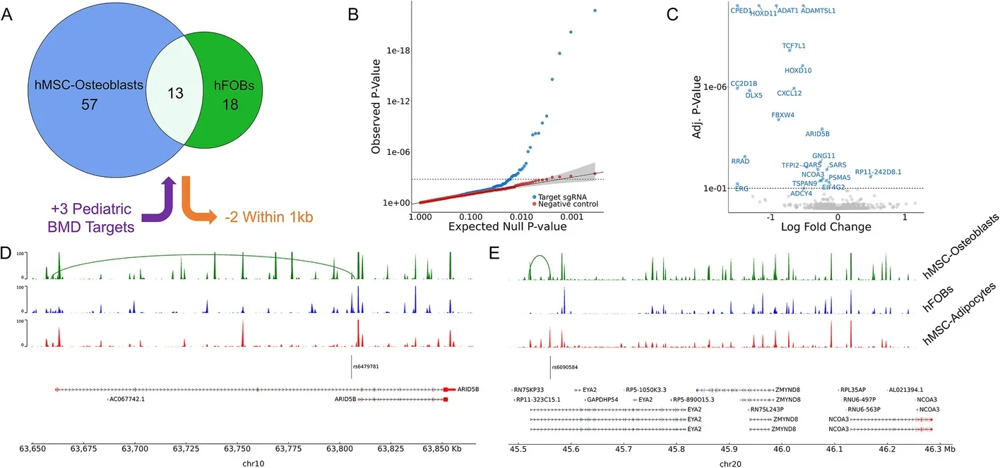

Testing which regulatory links hold up
Bone-density GWAS has over 1,100 signals, and for most of them the effector gene is unknown. We ranked 98 cell types by heritability enrichment, chose a bone-forming cell model the genetics supported, and used its chromatin maps to prioritise 89 non-coding regulatory elements.
CRISPRi silencing with a single-cell readout changed the expression of 23 genes at 20 of those sites. Chromatin contacts had predicted only 8 of the 23. Four genes (ARID5B, CC2D1B, EIF4G2, NCOA3) showed consistent effects in three osteoblast maturation and mineralisation assays after knockdown.
Fine-mapping across 37 traits showed that many bone loci are shared with body composition and metabolism, a reminder that a bone-density signal need not act in bone.
My contribution: conceptualisation, methodology and investigation (per the paper’s author statement); heritability-enrichment and variant-to-gene analyses.
- >1,100 GWAS signalsbone mineral density
- 98 cell typesranked by heritability
- 89 elementssilenced by CRISPRi
- 23 genes responded8 loop-predicted · 15 not
- 4 genesconsistent in 3 assays
Figures


Next step (ongoing, method only): drug-target Mendelian randomisation, asking whether genetically proxied modulation of these genes supports a therapeutic hypothesis.
Conery M*, Pippin JA*, Wagley Y*, Trang K*, et al. GWAS-informed data integration and non-coding CRISPRi screen illuminate genetic etiology of bone mineral density. Genome Biol. 2025;26:331. *co-first. Data: GEO GSE261284. PubMed →